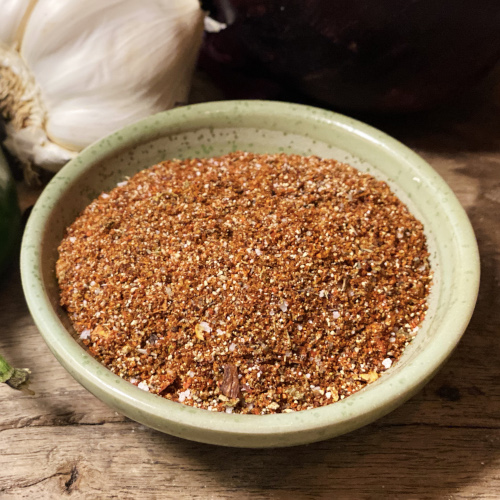

Taco Seasoning

What is Taco Seasoning?
Taco seasoning is a savory spice blend that's used to add warm, spicy, and smoky flavor to all kinds of dishes, from tacos to soups and casseroles. You can buy taco seasoning at the store or make it at home with ingredients you probably already have on hand.
Ingredients:
- 1 tablespoon chili powder
- 1 ½ teaspoons ground cumin
- 1 teaspoon sea salt
- 1 teaspoon ground black pepper
- ½ teaspoon ground paprika
- ¼ teaspoon garlic powder
- ¼ teaspoon onion powder
- ¼ teaspoon crushed red pepper flakes
- ¼ teaspoon dried oregano
Steps:
- Mix together chili powder, cumin, salt, pepper, paprika, garlic powder, onion powder, red pepper flakes, and oregano in a small bowl.